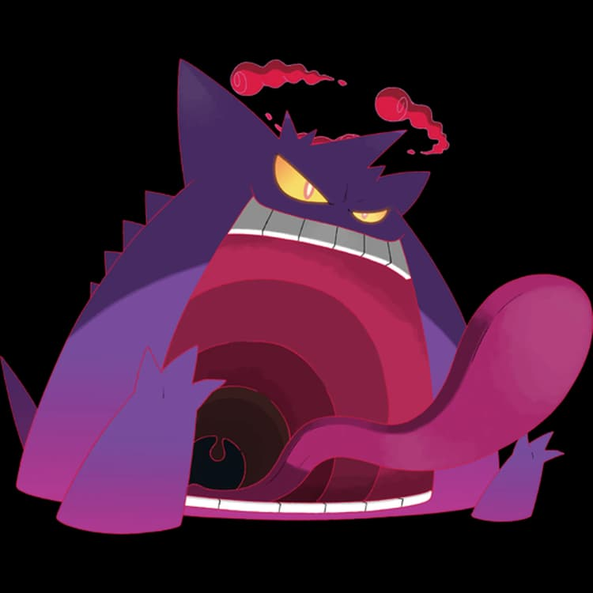
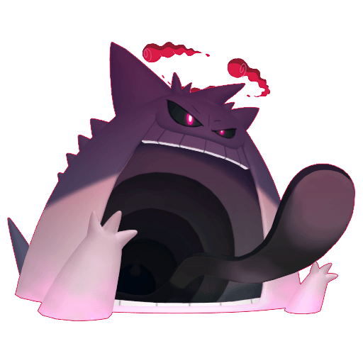

Gigantamax Gengar Overview
Gigantamax Gengar is a special form of Gengar that appears in limited-time Max Battle events. It is known for its dramatic design change and high-difficulty raid encounters, making it one of the more memorable Gigantamax battles in Pokémon GO-style gameplay.
Typing and Core Traits
- Type: Ghost / Poison
- Role: High-pressure raid boss
This typing allows Gengar to deal strong Ghost-type damage while also applying Poison-type coverage, forcing trainers to rely on properly selected counters during raids.
Raid Difficulty
Gigantamax Gengar is considered a high-tier raid boss that requires coordination, especially in public lobbies.
- Recommended: 6–10 experienced trainers for coordinated groups
- Safer range: 10–20 trainers in public raids
- Difficulty comes from frequent charged attacks and sustained pressure
Key Battle Pressure
- Strong Ghost-type charged attacks such as Shadow Ball.
- Fast energy generation leading to frequent attack cycles.
- Coverage moves that can punish unprepared teams.
Best Counter Types
- Dark-types: Most reliable and safe option
- Ghost-types: High damage but riskier
- Strong neutral attackers: Can help in mixed teams
Weather Influence
- Fog: Boosts Ghost- and Dark-type damage
- Cloudy: Slight benefit to Fairy-type counters
- Weather mainly affects damage output rather than catch rates or IVs
Shiny Form
- Shiny Gigantamax Gengar features a pale white/lavender color scheme.
- It is purely cosmetic with no change in stats or performance.
- It is only available during specific event rotations.
Common Mistakes
- Using Pokémon that cannot survive charged attacks.
- Ignoring type advantages when building teams.
- Joining raids with underpowered counters.
- Not preparing multiple battle teams for longer fights.
Is Gigantamax Gengar Worth Raiding?
Gigantamax Gengar is worth participating in for most trainers, but its value depends on your goals. It is not just about power—it is also about access to a rare Gigantamax form and high-difficulty group content.
Why Trainers Raid It
One of the main reasons to take on Gigantamax Gengar is its limited availability. Like other Gigantamax Pokémon, it only appears during special events, so missing it can mean waiting a long time for another chance.
- Rare Gigantamax form with limited return cycles.
- Strong relevance for Ghost-type raid teams in general Pokémon GO gameplay.
- Challenging group content that rewards coordination.
- Useful source of raid rewards during event periods.
When It May Not Be a Priority
Some trainers may choose to skip or limit raids depending on their current progress and resources.
- If you already have strong Ghost-type attackers built.
- If you are low on healing items or raid resources.
- If your focus is mainly PvP rather than raid content.
Practical Perspective
For most players, Gigantamax Gengar is not something you build an entire team around—but it is still worth participating in during events because of its rarity and the overall value of Max Battle content.
- High value: Collectors and raid-focused players.
- Medium value: Casual players joining community raids.
- Low priority: Players focused only on PvP optimization.
Gigantamax Gengar — Raid Boss Details
Gigantamax Gengar is a high-difficulty Max Battle boss with strong offensive pressure and fast-paced attack cycles. It is designed for coordinated group battles rather than small or unprepared teams.
Basic Profile
- Boss Type: Gigantamax Max Battle Boss
- Type: Ghost / Poison
- Difficulty: High
Battle Characteristics
In raids, Gigantamax Gengar applies consistent pressure through fast energy generation and frequent charged moves. Battles tend to be fast-paced, with limited downtime between attacks.
- Quick access to charged moves like Shadow Ball and Sludge Bomb.
- Continuous fast move pressure from Lick or Shadow Claw.
- Short recovery windows during battle.
- Higher damage output in longer fights due to repeated attack cycles.
What Makes the Raid Difficult?
- Frequent high-damage charged moves.
- Strong pressure on less durable Pokémon.
- Requires teams with proper type advantages.
- Performance drops quickly with unprepared groups.
Recommended Group Size
- 6–8 players: Possible with strong coordination and high-level counters.
- 10–15 players: Comfortable and consistent clears.
- 15+ players: Easiest and most stable public lobbies.
Key Threats
| Threat | Effect |
|---|---|
| Shadow Ball | High damage charged attack |
| Lick / Shadow Claw | Constant fast move pressure |
| Focus Blast | Coverage move that punishes Dark-types |
| Fast energy cycle | Reduces recovery time between attacks |
Gigantamax Gengar — Typing, Weaknesses & Resistances
Typing
- Type: Ghost / Poison
This combination gives Gengar strong offensive pressure along with useful resistances, but it also leaves it vulnerable to several common attacking types in raids.
Weaknesses
Gigantamax Gengar takes increased damage from the following types:
- Dark (most reliable counter type)
- Ghost
- Ground
- Psychic
Among these, Dark-type attackers are generally the safest and most consistent choice due to their resistance to Ghost damage.
Resistances
Gengar resists several types, which can make some commonly used Pokémon less effective in raids:
- Bug
- Grass
- Poison
- Fairy
Immunities
- Normal-type moves have no effect
- Fighting-type moves have no effect
Battle Insight
Gengar’s typing makes it particularly dangerous in raids because it can hit back hard with Ghost-type moves while also resisting several common attacking types. This is why Dark-type Pokémon are usually prioritized when building raid teams.
Best Counters for Gigantamax Gengar
Gigantamax Gengar is a Ghost/Poison-type Pokémon, making Dark-type attackers some of the safest and most effective choices. Strong Ghost-type Pokémon can also deal excellent damage, although they are often more vulnerable to incoming Ghost-type attacks.
Recommended Attackers
Gigantamax Grimmsnarl
- Excellent Dark-type damage output.
- Good durability compared with many offensive attackers.
- Handles Ghost-type attacks better than most counters.
Dynamax Arcanine
- Capable of dealing strong damage throughout the battle.
- Reliable choice for trainers with a well-powered Arcanine.
- Performs best when supported by a larger raid group.
Dynamax Alakazam
- Very strong offensive potential.
- Can contribute significant damage in a short period.
- Requires careful team support because of its lower durability.
Dynamax Latios
- Strong attack stats and good overall damage output.
- Useful for trainers looking to maximize raid damage.
- Works best when paired with bulkier teammates.
Dynamax Metagross
- Solid all-around performance.
- Good balance of damage and survivability.
- Accessible option for many experienced trainers.
Support and Defensive Choices
If your group needs additional durability rather than maximum damage, these Pokémon can help teams stay in the battle longer.
- Dynamax Umbreon – Excellent defensive option with strong Dark typing.
- Dynamax Blissey – Extremely durable and capable of absorbing damage.
- Gigantamax Snorlax – Useful for longer battles where survivability matters.
Pokémon to Avoid
- Fragile attackers that cannot survive charged attacks.
- Underpowered Pokémon that have not been properly leveled.
- Teams built without considering Gengar's Ghost-type damage.
Counter Strategy Tips
- Prioritize Dark-type attackers whenever possible.
- Build multiple battle teams in case your first team faints.
- Join larger groups if your counters are not fully powered up.
- Check Gengar's moveset before deciding on your final team.
Gigantamax Gengar Moveset Guide
Gigantamax Gengar can be a challenging raid boss because of its strong Ghost-type attacks and high offensive potential. Understanding its possible moves helps trainers choose the best counters and prepare for difficult matchups.
Fast Moves
Lick
- Type: Ghost
- Role: Fast energy generation
Lick allows Gengar to build energy quickly and apply steady damage throughout the battle. When paired with powerful charged moves, it can make encounters feel much more demanding.
Shadow Claw
- Type: Ghost
- Role: Balanced damage and energy gain
Shadow Claw deals more direct damage than Lick while still generating energy efficiently, making it another strong option for Gengar.
Charged Moves
Shadow Ball
- Type: Ghost
- One of Gengar's strongest charged attacks.
Shadow Ball is usually the move trainers are most concerned about. It deals heavy damage and can quickly knock out Pokémon that do not resist Ghost-type attacks.
Sludge Bomb
- Type: Poison
- Reliable secondary charged move.
Sludge Bomb provides strong neutral damage and can be especially threatening to Fairy- and Grass-type Pokémon.
Focus Blast
- Type: Fighting
- Coverage move.
Focus Blast is slower but extremely powerful. It can be particularly dangerous for Dark-type attackers that would otherwise resist Ghost-type moves.
Most Threatening Moves
| Move | Threat Level | Reason |
|---|---|---|
| Shadow Ball | High | Powerful Ghost-type damage |
| Focus Blast | High | Can punish Dark-type counters |
| Sludge Bomb | Moderate | Reliable Poison-type damage |
| Lick | Moderate | Generates energy quickly |
Counter Tips
- Dark-type Pokémon are generally among the safest choices.
- Avoid relying on a single attacker for the entire battle.
- Be prepared for different charged move combinations.
- Revive and rejoin quickly if your team faints during longer encounters.
Weather Boost and Gigantamax Gengar
Weather can affect both the battle itself and the Pokémon you encounter after defeating Gigantamax Gengar. Understanding these effects can help you choose the best counters and identify weather-boosted catches.
Fog Weather
Fog is the most important weather condition for Gigantamax Gengar because it boosts Ghost-type Pokémon.
- Ghost-type attacks deal increased damage.
- Gigantamax Gengar becomes slightly more threatening if it is using Ghost-type moves.
- Ghost- and Dark-type attackers on your team can also benefit from the boost.
- Caught Gengar will appear at a higher level after the battle.
Other Weather Conditions
Most other weather types have little direct impact on Gigantamax Gengar itself, although they may improve the performance of certain counters.
| Weather | Effect on the Raid |
|---|---|
| Fog | Boosts Ghost-type Pokémon and attacks |
| Cloudy | May help Fairy-type attackers |
| Sunny | No major effect on Gengar |
| Rainy | Little impact on most Gengar counters |
| Windy | Generally minimal impact |
Weather-Boosted Encounters
When weather conditions boost Gengar, the Pokémon you catch after the battle will be at a higher level than a standard encounter. This results in a higher CP, but it does not increase the chances of receiving strong IVs.
- Higher catch CP when weather boosted.
- Higher encounter level.
- No change to shiny rates.
- No guaranteed improvement to IV quality.
Raid Tips
- Check the weather before joining multiple raids.
- Use strong Dark- and Ghost-type counters whenever possible.
- Weather-boosted catches can save Stardust and Candy because they start at a higher level.
Gigantamax Gengar Catch CP Guide
After defeating Gigantamax Gengar in a Max Battle, trainers will have an opportunity to catch it. The CP you encounter depends on factors such as IVs and whether the Pokémon is weather boosted.
Why Catch CP Matters
Checking the CP of your encounter can help you quickly estimate its IV quality before completing a full appraisal. Higher CP values generally indicate stronger IV combinations, although an appraisal is always the best way to confirm quality.
Weather Boost Effects
When weather conditions boost Ghost-type Pokémon, Gigantamax Gengar will be encountered at a higher level than normal, resulting in a higher CP range.
- Non-weather boosted encounters appear at the standard raid catch level.
- Weather-boosted encounters appear at a higher level and have increased CP.
- Weather boosts do not guarantee better IVs.
Evaluating Your Catch
| Appraisal Result | General Value |
|---|---|
| 0★ – 1★ | Collection purposes |
| 2★ | Usable but not ideal |
| 3★ | Good long-term investment |
| Perfect IV (15/15/15) | Top-tier collector and raid target |
Catch Tips
- Use Golden Razz Berries whenever possible.
- Aim for Great or Excellent Curveball throws.
- Take your time between throws rather than rushing.
- Complete the appraisal after catching to check IV quality.
For most trainers, a strong 3★ or perfect IV Gigantamax Gengar is the most desirable outcome because of its usefulness in Ghost-type raid teams and its value as a collector's Pokémon.
Gigantamax Gengar Shiny Comparison
One of the main reasons trainers hunt Gigantamax Gengar is the chance to obtain its shiny form. While the shiny version has the same battle performance as the standard form, its unique appearance makes it a popular addition to many collections.
What Changes in the Shiny Version?
Regular Gigantamax Gengar keeps its familiar dark purple appearance, while the shiny version features a much lighter color scheme that stands out immediately during encounters and battles.
| Feature | Gigantamax Gengar | Shiny Gigantamax Gengar |
|---|---|---|
| Body Color | Dark purple | Lighter purple and white tones |
| Battle Performance | Standard | Identical |
| Moveset | Standard | Identical |
| Collection Value | High | Very high |
Does Shiny Gigantamax Gengar Perform Better?
No. The shiny version is purely cosmetic. Both forms have the same stats, moves, and battle performance. The only difference is appearance.
Why Do Trainers Want the Shiny?
- Limited availability during specific events.
- Gengar is one of the franchise's most popular Pokémon.
- The color difference is more noticeable than many other shiny Pokémon.
- Combining a shiny form with a Gigantamax form makes it a desirable collectible.

Gigantamax Gengar

Shiny Gigantamax Gengar
For collectors, the shiny version is usually the more sought-after reward, even though both forms perform exactly the same in battle.
Gigantamax Gengar Raid Tips
Gigantamax Gengar can hit surprisingly hard, especially when using Ghost-type attacks. While strong counters are important, success often comes down to bringing the right team and avoiding unnecessary knockouts during the battle.
Choose the Right Counters
Dark-type Pokémon are usually the safest option because they resist Ghost-type attacks while still dealing super-effective damage. Ghost-type attackers can also perform well, but they are often more vulnerable to Gengar's attacks.
- Prioritize strong Dark-type attackers whenever possible.
- Use high-level Pokémon with powered-up movesets.
- Avoid bringing underpowered Pokémon simply because they match the type advantage.
Balance Damage and Durability
Many trainers focus entirely on damage, but surviving longer can often contribute more overall damage throughout the battle. A balanced team is usually more reliable than a team made up entirely of fragile attackers.
- Lead with your strongest counters.
- Keep a few durable Pokémon available for longer battles.
- Have backup attackers prepared in case your first team faints.
Watch for Charged Attacks
Shadow Ball is typically one of the most dangerous attacks Gigantamax Gengar can use. Trainers should pay attention to incoming charged attacks and be prepared to use available defensive options when necessary.
- Avoid wasting defensive resources too early.
- Prioritize survival during heavy damage phases.
- Recover quickly after multiple Pokémon faint.
Weather Considerations
Weather conditions can influence raid difficulty. Foggy weather strengthens Ghost-type attacks, which can make Gigantamax Gengar more dangerous. Planning around weather boosts can help improve your chances of success.
Playing in Larger Groups
The easiest Gigantamax Gengar raids are usually completed with coordinated groups. Larger lobbies provide more consistent damage output and reduce the impact of individual mistakes.
- Join raids early when player activity is highest.
- Coordinate with local communities whenever possible.
- Make sure all trainers have prepared counters before starting.
Final Tip
If you are struggling to complete the raid, focus on improving team quality rather than simply adding more Pokémon. A smaller group with strong Dark-type counters will often perform better than a larger group using random teams.
Gigantamax Mechanics
Gigantamax battles (like against Gengar Gigantamax form) use a special battle system that is different from normal raids and even standard Dynamax fights.
What is Gigantamax?
- A special transformation of specific Pokémon
- Replaces normal Dynamax form
- Changes:
- Appearance (unique design)
- Signature “G-Max” move style
- Battle visual effects
Max Battle System
Key features:
- Team-based battles
- Shared battle field pressure
- Powerful raid boss attacks and special mechanics
- Requires coordination
Max Moves System
Instead of normal moves alone:
- Fast moves build energy
- Energy is used for:
- Max Attack (damage)
- Max Guard (defense)
- Max Spirit (healing/support)
Role System in Battle
Players often split into roles:
- Damage Dealers → focus on DPS
- Damage-focused players → maximize DPS
- Defensive players → use Max Guard to reduce incoming damage
- Support-focused players → use Max Spirit to help the team survive
Why Gigantamax Battles Are Harder
- Bosses have significantly larger HP pools
- Success depends on both damage and survival
- Max Guard and Max Spirit become important during long battles
- Coordination matters more than in standard raids
Gigantamax Advantage
Gigantamax Pokémon (like Gengar) have:
- Unique visual arena effects
- Strong raid pressure presence
- Exclusive G-Max Moves that differ from standard Max Moves
Raid Boss Scaling
Gigantamax bosses:
- Have boosted HP pools
- Use frequent charged attacks
- Pressure teams with fast move cycles
Weather Interaction
Weather affects:
- Damage output
- Counter viability
- Move effectiveness
Key Differences vs Normal Raids
| Feature | Normal Raid | Gigantamax Raid |
|---|---|---|
| Battle Style | Individual DPS | Team-based roles |
| Strategy | Counter DPS | Coordination + timing |
| Difficulty | Moderate–High | High–Very High |
| Survival | Simple healing | Max Guard + team sustain |
Dangerous Moves
Gengar Gigantamax form becomes especially threatening in raids because of its fast energy gain + high burst Ghost damage. Some moves can quickly knock out unprepared teams.
Most Dangerous Moves
G-Max Terror
- Type: Ghost
- Damage: ⭐⭐⭐⭐⭐ (Very High)
Why it's dangerous:
- Gigantamax Gengar's signature Max Move
- Deals heavy Ghost-type damage
- One of the primary sources of raid pressure in Max Battles
Sludge Bomb
- Type: Poison
- Damage: ⭐⭐⭐⭐ (High)
Why it’s dangerous:
- Strong neutral damage against many Pokémon
- Punishes Fairy and Grass counters hard
- Fast cooldown pressure in raids
Shadow Ball
- Type: Ghost
- Damage: ⭐⭐⭐⭐⭐
Why it's dangerous:
- Gengar's strongest standard Ghost-type charged move
- Very high burst damage
- Can quickly KO fragile counters
Lick
- Type: Ghost
- Role: Fast energy generator
Why it’s dangerous:
- Generates energy very quickly
- Allows Gengar to reach charged attacks faster
- Increases the frequency of dangerous charged moves
Focus Blast
- Type: Fighting
- Damage: ⭐⭐⭐⭐⭐
Why it’s dangerous:
- Unexpected coverage move
- Punishes Dark-type counters
- Can instantly flip raid advantage
Fast Move Pressure Combo
Typical combo pattern:
- Lick → fast energy gain
- Shadow Ball / Sludge Bomb spam
Common Raid Mistakes — Gigantamax Gengar
Gengar Gigantamax raids are often lost not because the boss is impossible, but because teams make avoidable mistakes. Here are the most common ones that hurt success rates.
Using the Wrong Counters
- Bringing neutral attackers instead of Dark- or Ghost-type counters
- Using Pokémon with poor movesets
Ignoring Shadow Ball Timing
- Shadow Ball is the main KO move
- Players often don’t react or heal in time
Result:
- Entire team gets wiped in burst cycles
- Loss of momentum in raid phase
Underestimating Gengar's Fragility
- Players often focus only on damage output
- They ignore survivability and relobby planning
Result:
- Frequent knockouts
- Loss of damage uptime
Bringing Glass Cannons Without Support
- Pure attackers with no survivability
- No balance between damage and durability
Result:
- Pokémon faint too quickly
- Overall DPS drops due to constant revives
Poor Dark-type Usage
- Not using strong Dark- or Ghost-type counters
- Using underpowered or low-level Pokémon
Result:
- Raid takes longer than necessary
- Higher chance of failure in time-limited battles
No Team Coordination
- Random targeting
- No shared strategy for healing/shields
Result:
- Wasted healing windows
- Inefficient damage phases
Overusing Wrong Weather Advantage
- Fog weather boosts Ghost moves
- Some players still overcommit during bad weather
Result:
- Higher damage taken
- Increased faint rate
Not Managing Revives Properly
- Players re-enter with weak Pokémon instantly
- No rotation strategy for team sustainability
Result:
- Constant downtime
- Lower overall raid DPS
PvP, PvE, Raids, Gyms & Cups — Gigantamax Gengar
Gengar Gigantamax form is mainly a PvE raid-focused powerhouse, but its value changes a lot depending on the battle mode.
PvP (Trainer Battles)
Performance: Niche but Dangerous
- High damage potential, but very fragile
- Gets knocked out quickly by common meta picks
- Relies on shields heavily
Pros:
- Strong surprise nukes (Shadow Ball pressure)
- Can punish unshielded opponents
Cons:
- Low bulk = inconsistent wins
- Outclassed in consistency by bulkier PvP options and some Dark-type meta picks.
PvE
Performance: Very Strong
- Excellent Ghost-type attacker
- High DPS makes it useful for:
- Psychic raids
- Ghost raids
- Some raid events requiring fast damage
Raids (Max Battles / Gigantamax Raids)
Performance: Excellent
- One of the best burst damage Ghost attackers
- Works best in coordinated groups
- Weakness is survivability, not damage
Role in raids:
- Fast damage dealer
- Glass cannon finisher
- Benefits from teammates that can absorb damage while Gengar focuses on dealing burst DPS.
Gyms
Performance: Good on Offense, Poor on Defense
- Can clear gyms quickly due to high attack
- Not ideal for defending gyms
Offense
- Fast gym sweeper
Defense
- Very poor defender (low stamina + defense)
Cups
Performance: Niche Pick
- Can appear in limited cups where Ghost-types are allowed
- Dangerous if it lands charged moves first
- Still inconsistent due to fragility
Final Takeaway
- PvE: Excellent raid attacker
- Raids: High-priority DPS role
- Gyms: Strong attacker, weak defender
- PvP: Niche / situational
- Cups: Rare but dangerous spice pick
Evolution & Mega Potential — Gigantamax Gengar
Gengar is one of the rare Pokémon that has both a full evolution line and a Mega Evolution, but its Gigantamax form sits outside the normal evolution system.
Evolution Line
- Gastly → Haunter → Gengar
Final stage: Gengar
Mega Evolution Potential
Mega Gengar
- Type: Ghost / Poison
- One of the strongest Ghost-type attackers ever created
- Massive boost in Attack stat
- Very popular in raid meta
Key Traits:
- Extremely high DPS
- Glass cannon style becomes even more extreme
Gigantamax vs Mega Gengar
| Feature | Gigantamax Gengar | Mega Gengar |
|---|---|---|
| Battle Type | Max Battles | Mega Raid Boost |
| Damage | Very High | Extremely High |
| Survivability | Low | Very Low |
| Availability | Event-limited | Energy-based |
| Utility | Group raid boss fights | Provides Ghost- and Poison-type Mega boosts to allies |
Key Insight
- Gigantamax Gengar shines in Max Battles through exclusive Gigantamax mechanics.
- Mega Gengar excels in standard raids thanks to its exceptional Ghost-type DPS and team Mega boosts.
Stats Breakdown — Gigantamax Gengar
Gengar Gigantamax form does not officially change its base stats in Pokémon GO, but its Max Battle mechanics and exclusive Gigantamax move significantly increase its overall battle impact.
Base Stats
- Attack: 261 (Very High)
- Defense: 149 (Low)
- Stamina: 155 (Low)
Gigantamax Battle Performance
Even though stats don’t directly “increase” in all systems, Gigantamax battles effectively amplify its impact:
Offensive Output
- Extremely high burst damage potential
- Strong synergy with Ghost-type moves like Shadow Ball
- Fast energy gain → frequent charged attacks
Defensive Profile
- Still fragile
- Takes heavy damage from:
- Dark-type attacks
- Strong neutral charged moves
Effective Raid Power
| Category | Rating |
|---|---|
| Damage Output | Very High |
| Survivability | Low |
| Consistency | Medium |
| Raid Efficiency | High |
Strength vs Weakness Summary
Attack (261)
- One of the highest Ghost-type attack profiles
- Excellent raid damage per second (DPS)
- Fast move + charge move synergy
Weaknesses
- Very low bulk
- Weak to common Dark and Ghost attackers
- Benefits from coordinated shielding and healing during Max Battles
Player Requirements for Gigantamax Gengar
Gigantamax Gengar is one of the tougher Max Battle bosses, so the number of trainers needed depends on team quality, counter selection, and overall coordination.
Minimum Group
6–8 experienced trainers
- Requires strong Dark-type attackers
- Players should be using optimized battle teams
- Little room for mistakes during the raid
Recommended Group Size
10–15 trainers
- The most reliable range for most communities
- Works well with a mix of experienced and casual players
- Provides a comfortable balance between damage and survivability
Comfortable Clear
15–20 trainers
- Suitable for public raid groups
- Less dependent on perfect counters
- Higher success rate and faster clears
Why Gigantamax Gengar Can Be Challenging
- Strong Ghost-type attacks can quickly knock out weaker Pokémon
- Frequent charged moves increase pressure throughout the battle
- Poor team composition can significantly slow down clear times
- Coordination becomes important in smaller groups
Tips for Smaller Groups
- Focus on strong Dark-type attackers
- Prepare multiple battle teams for quick rejoins
- Use healing and defensive mechanics effectively
- Coordinate Max Battle actions whenever possible
FAQ — Gigantamax Gengar
Here are the most common questions about Gengar Gigantamax form and raid usage.
Is Gigantamax Gengar hard to defeat?
Yes. It is considered a high-difficulty Gigantamax raid boss.
- Deals heavy Ghost-type damage
- Requires coordinated counters
- Dark-type attackers perform best overall
What is the best counter for Gigantamax Gengar?
Top counters include:
- Gigantamax Grimmsnarl
- Dynamax Arcanine
- Strong Dark-type attackers
Ghost-types can also work, but they are riskier because they take super effective Ghost damage.
Can Gigantamax Gengar be shiny?
Yes, but only during specific events.
- Shiny form is pale white/lavender
- Highly desirable for collectors
Is Gigantamax Gengar good for raids?
Yes.
- Top-tier Ghost-type attacker
- Excellent burst damage
- Very fragile defense
Is Gigantamax Gengar useful in PvP?
Not really.
- Mainly designed for PvE raids
- Not a major PvP meta Pokémon
When is Gigantamax Gengar available?
It usually appears during limited-time events such as:
- Halloween events
- Gigantamax re-run events
- Special Max Battle events
How many players are needed to beat Gigantamax Gengar?
- Minimum: 6–10 strong trainers
- Recommended: 10–20 players
What makes Gigantamax Gengar different from normal Gengar?
Gigantamax Gengar features:
- Massive visual transformation
- Special Max Battle effects
- Higher raid difficulty
- Event-exclusive availability
Is Gigantamax Gengar worth powering up?
Yes, especially if you need strong Ghost-type raid attackers.
- Excellent PvE performance
- High damage output
- Good budget-friendly Ghost attacker
Pokédex Information — Gigantamax Gengar
Gengar is a Ghost/Poison-type Pokémon known as the Shadow Pokémon. Since its debut in Generation I, it has been one of the franchise’s most recognizable Ghost-types thanks to its mischievous personality and powerful offensive abilities.
Basic Pokédex Data
- Type: Ghost / Poison
- Category: Shadow Pokémon
- Evolution Line: Gastly → Haunter → Gengar
Gigantamax Appearance
When Gengar Gigantamaxes, its body appears to sink into the ground, leaving behind a gigantic spectral mouth that dominates the battlefield. The transformation creates the illusion of a portal leading into a dark shadowy void.
- One of the most visually unique Gigantamax forms
- Massive glowing eyes and mouth replace its normal silhouette
- Creates the appearance of a giant haunted gateway
Pokédex Lore
Gengar is often associated with shadows and mysterious phenomena. According to various Pokédex entries, it enjoys hiding in dark places, startling unsuspecting people, and lurking just beyond the edge of sight.
- Often appears in dark or abandoned locations
- Known for its playful but spooky nature
- Frequently described as moving through shadows unnoticed
Battle Traits
- Known for strong offensive power and speed
- Excels at dealing Ghost-type damage
- Relies more on attack pressure than durability
- Performs best when used aggressively in raids
Comparison Section — Gigantamax Gengar vs Other Gigantamax
Here’s how Gengar Gigantamax form stacks up against the classic Kanto Gigantamax trio.
Overall Comparison Table
| Feature | Gigantamax Gengar | Gigantamax Charizard | Gigantamax Blastoise | Gigantamax Venusaur |
|---|---|---|---|---|
| Type | Ghost / Poison | Fire / Flying | Water | Grass / Poison |
| Raid Role | High DPS glass cannon | Balanced attacker | Tank + control | Bulky support |
| Difficulty | High | High | Medium–High | Medium–High |
| Survivability | Low | Medium | High | High |
| Damage Output | Very High | Very High | Medium | Medium |
| Best Use | Fast raid clears | All-round raids | Long fights | Defensive raids |
Gigantamax Gengar vs:
Gigantamax Charizard
- Gengar = higher burst damage but fragile
- Charizard = more balanced and safer
- Gengar wins in pure DPS
- Charizard wins in consistency
Verdict:
- Gengar = speed clearing raids
- Charizard = safer overall pick
Gigantamax Blastoise
- Blastoise is a tank with survival tools
- Gengar is a glass cannon attacker
- Blastoise outlasts long fights
- Gengar finishes fights faster
Verdict:
- Blastoise = endurance
- Gengar = fast damage pressure
Gigantamax Venusaur
- Venusaur is balanced and defensive
- Gengar is offensive and risky
- Venusaur handles sustained raids better
- Gengar dominates quick burst scenarios
Verdict:
- Venusaur = stability
- Gengar = aggression
Final Comparison Verdict
- Best raw damage: Gengar
- Best survival: Blastoise
- Best balance: Charizard
- Best defensive utility: Venusaur
Events & Availability — Gigantamax Gengar
Gigantamax Gengar is not permanently available in Pokémon GO. It appears only during special event rotations, usually for a short time, making it one of the more time-sensitive Gigantamax raid targets.
Event Debut
- First introduced during Halloween-themed events
- Featured in high-difficulty Max Battles (6-star level raids)
- Available only for limited-time event windows
Returning Appearances
Gigantamax Gengar has returned during special re-run events such as “GO Bigger”-style updates, where multiple Gigantamax Kanto Pokémon are featured together, including Venusaur, Charizard, Blastoise, and Gengar.
- Typically available for 2–3 days during event rotations
- Rotates alongside other Gigantamax Pokémon
- Usually appears in Power Spot Max Battles during these events
Availability Pattern
- Not part of the permanent raid pool
- Returns during themed events (Halloween, anniversary, or special Max Battle weekends)
- Availability windows are short and highly active
What Players Should Know
- If no event is active, Gengar cannot be encountered in raids
- When it returns, it is usually available only for a limited 2–3 day period
- High demand means raids fill quickly during event windows
Conclusion — Gigantamax Gengar
Gigantamax Gengar is a strong raid option, but not a must-have for every player. It performs well as a Ghost-type attacker in PvE and can be useful in raids where Ghost damage is effective, but it doesn’t completely redefine the meta.
Its biggest value comes from two things: solid raid performance and limited-time availability. Like most Gigantamax Pokémon, it also has strong collector appeal, especially for players trying to complete their Gigantamax lineup.
Overall Verdict
- Worth it: If you focus on raids or want all Gigantamax forms
- Situational: If you already have strong Ghost/Dark attackers built
- Low priority: If you’re saving resources or play casually
Bottom line: Good to have, not mandatory — more of a long-term collection + raid utility pick than a meta-defining Pokémon.
Related Posts
You may also find these Pokémon GO raid guides helpful: